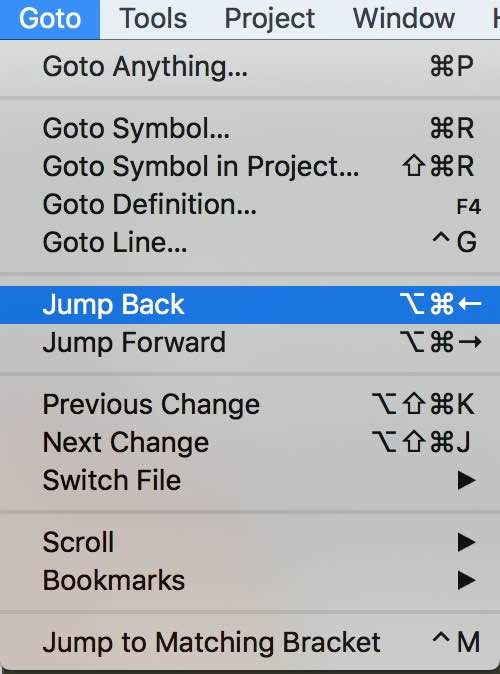

How to Move Back and Forward through your Edit History with Sublime Text
When using Sublime Text as your IDE, it’s pretty useful to be able to move through the history of your edits. I went looking for a plugin to do this on Package Control (as you do) but then found out that this feature is inherently supported in Sublime Text 3.

Jumping back and forward
If you want to change the key bindings, click on Preferences > Key Bindings - User and add your key mappings. Here’s an example that uses ALT + COMMAND + LEFT and ALT + COMMAND + RIGHT to move back and forward through history respectively:
{ "keys": ["alt+super+left"], "command": "jump_back" },
{ "keys": ["alt+super+right"], "command": "jump_forward" }